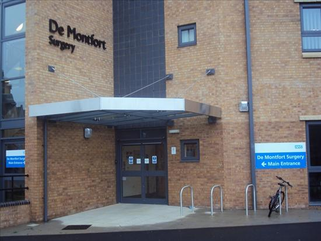
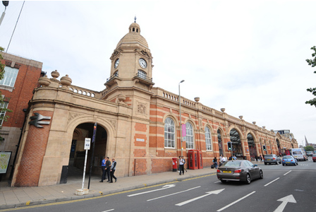
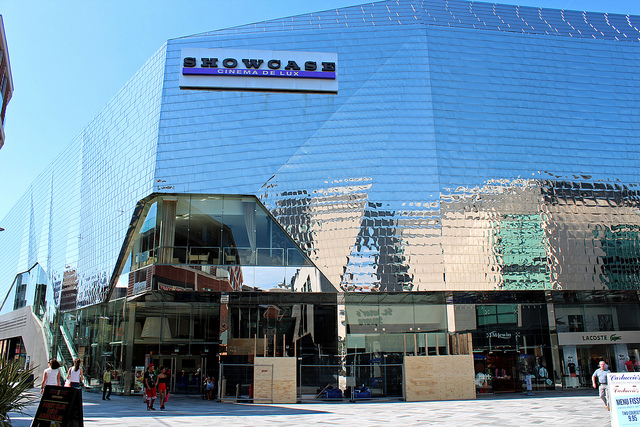
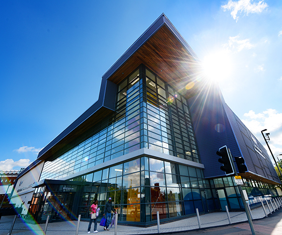
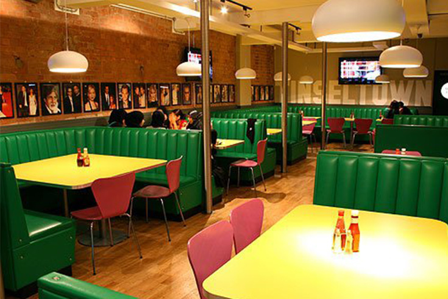

Work accredited and used from De Monfort University Website
Welcome to De Monfort University
About
This course enables you to learn and understand how a software can be build, designed and developed. You will gain enough practical experience and knowledge for you to be able to work comfortably at your computing career in the future. The subjects that you will cover in the course are, Database design, Computer Technology, Internet Technology, Multimedia, Interactive System Design and System Development, Programming, Computing Project and many more.
Why Study At De Monfort University
- De Montfort University Gives you the opportunity to gain practical experience by allowing you to do a year in a work placement. With our aid various of students managed to get placement year at many different organisations, such as Intel Corporation, Serck Controls Ltd, TNT Express, Hewlett Packard, Eon UK, GlaxoSmithKline, AstraZeneca, Thomson Reuters.
- In 2012/2013, 100% of ALL our recent student graduates were able to find work or they were in further study within 6 months of graduating.
- The modules on this course are made very easy to provide for you a combined course of study, these include, business skills where you will be writing a report, planning a project, working in a group, delivering presentations and many more.
About Leicester:
De Montfort Surgery
Now De Montfort University health centre is located within the campus. To register all you have to do is fill in a form and return it to the surgery. They will help you in treating all minor health problems that occur and it is very easy to book an appointment with the health clinic.
Train Station
Now the train station is not far off, it is about 20 minutes’ walk from the university campus, this is very important especially for those students who are not from Leicester and are commuting.
Showcase Cinema
Showcase Cinema is located within the city centre. It is about 10 minutes’ walk from the university campus. The cinema shows all the latest movies and it is open till very late in the night.
Highcross Shopping Centre
The highcross shopping centre is located within the city centre. It is about 10 minutes’ walk from the university campus. Highcross is a big shopping centre and has many different types of shops in it. It was opened in 2008 and it currently holds 140 different stores including Apple, Hugo Boss, All saints, Topshop and many more. The shopping centre opening time is from 9:30 AM till 8:00 PM on the weekdays.
DMU Leisure Centre
DMU leisure centre is located on the university campus. It provides many different kinds of facilities for the students and staff, such as a 25 metre six lane swimming pool, eight court sports hall, climbing wall, fitness gym, dance studio, poolside sauna, and many more.
Tinseltown
Tinseltown is located very near to the university campus. It is about 5 minutes’ walk from the university campus. It Is a family run business which is popular in making American-style milkshakes. They are influenced by New York style of food and also has an American style diner. It has a rating of 3/5 stars TripAdvisor and is open from 12:00 PM till 2:00AM.
Go back to top page